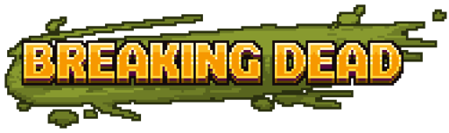
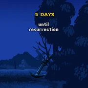
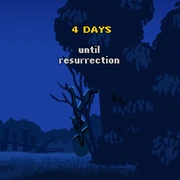
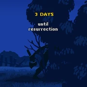
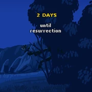
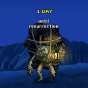

Breaking Dead



Breaking Dead Logo
Description
Introducing Breaking Dead - the first expansion of Graveyard Keeper! Create an army of undead workers that automate chores around your Graveyard!
What to Expect
- Automate gathering of stone, wood, and have zombies craft your items.
- Taking care of your graveyard's garden has never been easier when zombies do it for you.
- Create logistics chains where zombies automate sale of merchandise, for extra profit.
- Modify and upgrade your zombies (they might need better organs) to make them more efficient.
Other Info
- You can start the DLC by entering the morgue at any point after the fourth
 ; a new save is not required.
; a new save is not required. - The Steam version of the DLC is a free expansion and part of the base-game.[1]
- On all other versions of the game, Breaking Dead is a paid DLC and not a part of the base-game. As of May 2024 the Breaking Dead DLC is $5 USD on all consoles, and $3 USD as an in-game purchase for the iOS and Android releases; subject to regional pricing.[2][3][4][5][6]
Releases
Breaking Dead was first teased on October 25th, 2018 on Steam; The teaser was a still image that read: "5 DAYS until resurrection"[7] An image was posted each following day, counting down from 5.[8][9][10][11]
The post on October 27th had 2 clarifying notes: "No, we're not teasing a console release." and "The thing that is coming is related to the pictures you see."[9]
The post on October 29th showed clear artwork of a zombie.[11]
Breaking Dead was released on October 30th 2018 on Steam as a free expansion integrated into the base-game.[1] The DLC was released as a paid expansion for: the Xbox One & Series X|S on May 30th 2019;[2] the PlayStation 4, Nintendo Switch, iOS, and Android on June 27th 2019 alongside the base-game.[3][4][5][6]
Gallery
 Image Posted October 25th[7] |
 Image Posted October 26th[8] |
 Image Posted October 27th[9] |


 Image Posted October 28th[10] |
 Image Posted October 29th[11] |


References
- ↑ 1.0 1.1 https://store.steampowered.com/news/app/599140/view/3929910003151966726
- ↑ 2.0 2.1 https://www.xbox.com/en-AU/games/store/breaking-dead-dlc/9MTKX7GDJKF1/0010
- ↑ 3.0 3.1 https://store.playstation.com/en-us/product/UP0097-CUSA10727_00-BREAKINGDEAD0000
- ↑ 4.0 4.1 https://www.nintendo.com/us/store/products/breaking-dead-70050000012641-switch/
- ↑ 5.0 5.1 https://apps.apple.com/us/app/graveyard-keeper/id1461238719
- ↑ 6.0 6.1 https://play.google.com/store/apps/details?id=com.tinybuild.graveyardkeeper